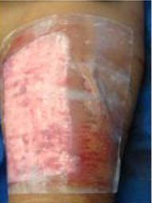
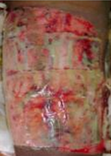
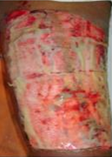
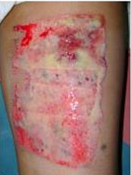
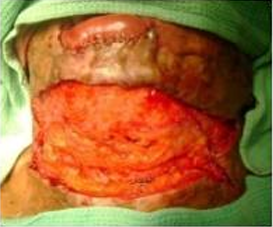
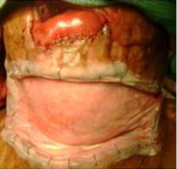
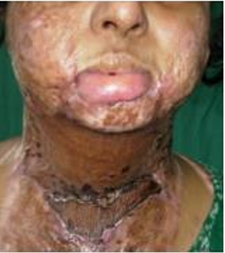

Surgicoll-Mesh® provides essential physical support for hernia repair, gradually degrading over time to trigger new tissue growth that strengthens the damaged site.
Surgicoll-Mesh® offers superior advantages over synthetic and biological collagen products for the treatment of pelvic floor reconstruction including vaginal, urethral, bladder, and rectal prolapse. It acts as a scaffold that can be naturally bioabsorbed and progressively integrated with new host tissue.

Weak pelvic muscles and ligaments may cause organs to shift and bulge into the vagina. Surgicoll-Mesh® reinforces the weakened vaginal wall and can be implanted through abdominal surgery using mesh support.

A urethrocele occurs when tissues around the urethra sag downward into the vagina. Surgicoll-Mesh® urethral slings help support the bladder neck and urethra through a midurethral sling procedure.

A cystocele occurs when the bladder presses against the vaginal wall. Surgicoll-Mesh® urethral slings help hold the urethra in the correct position for improved support.

Uterine prolapse happens when pelvic muscles weaken and can no longer support the uterus. Surgicoll-Mesh® helps restore natural support by connecting the uterus to stronger tissue.

An enterocele occurs when the small bowel bulges into the vaginal wall due to weakened pelvic support tissues. Surgicol-Mesh helps reinforce the affected area, providing support and promoting tissue integration.

Rectocele is the bulging of the rectum into the vaginal wall. Surgicoll-Mesh® is placed behind the rectum and fixed to the sacrum for enhanced structural support.
Excellent coverage over exposed bones and joints can be achieved faster through Surgicoll-Mesh®'s nanotechnological approach clinically proven for reconstruction of complex wounds, obviating the need for flap cover.
Surgicoll-Mesh® offers clear advantages over synthetic and other collagen products for reconstructive surgeries.
The product's unique nanotechnological approach ensures faster coverage over exposed bones and joints making it the preferred choice for complex hand deformity reconstruction.

Hand deformation before surgery complex wound with exposed structures

Surgicoll-Mesh® applied to exposed bones and joints

Active granulation tissue formation and scaffold integration

90% healing achieved without flap coverage
Surgicoll-Mesh® and Hemocoll® together offer disruptive technology solutions for eminent general surgeons covering anastomosis reinforcement and complex abdominal wall reconstruction.
Surgicoll-Mesh® can be used in reinforcing gastrointestinal anastomosis. This product fulfils the clinical requirement for offering essential physical support. As the product gradually degrades over time, it prompts the growth of new tissue, thereby enhancing the strength of the treated area.
This application is particularly valuable following bowel resection procedures where end-to-end reattachment requires additional mechanical support during the healing phase, reducing the risk of anastomotic leakage and associated complications.
A peer-reviewed case series published in the Journal of Clinical and Diagnostic Research (September 2024) demonstrated excellent outcomes in three patients with infected posthernioplasty abdominal wounds treated using Surgicoll-Mesh®. All cases showed resolution of infection, effective wound healing, and no hernia recurrence at one-year follow-up.









Choose from our wide range of standard sizes (in cm). Custom sizes available on request.